방송통신기사 (2015-03-08 기출문제)
1과목: 디지털 전자회로
1. 다음 그림은 정류회로의 입력파형과 출력파형을 나타내었다. 주어진 입출력 특성을 만족시키는 정류회로는? (단, 다이오드의 문턱전압은 0.7[V]이고, 변압기의 권선비는 1:1이라고 가정한다.)
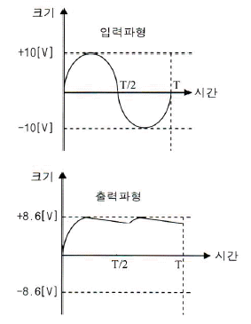
- 반파정류회로
- 유도성 중간탭 전파정류회로
- 2배압 정류회로
- 용량성 필터를 갖는 브리지 전파정류회로
(정답률: 60%)

2. 정류회로 출력 성분 중 교류인 리플을 제고하기 위해 정류회로 다음 단에 접속되는 회로는 무엇인가?
- 평활회로
- 클램핑회로
- 정전압회로
- 클리핑회로
(정답률: 69%)
3. 주어진 그림은 N-채널 FET 소자의 직류전달 특성을 나타내었다. 이 소자의 트랜스컨덕턴스는?
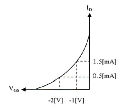
- 1.0[ms]
- 2.0[ms]
- 10[ms]
- 20[ms]
(정답률: 53%)
4. 입력 저항이 20[kΩ]인 증폭기에 직렬 전류 궤환회로를 적용할 경우 입력 저항값은 얼마가 되는가? (단, β=9이다.)
- 0.1[MΩ]
- 0.2[MΩ]
- 0.3[MΩ]
- 0.4[MΩ]
(정답률: 40%)
5. 다음 궤환회로에 대한 설명으로 틀린 것은?
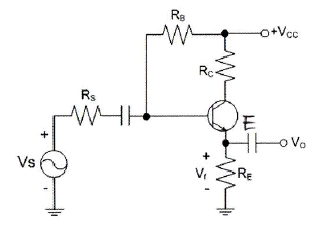
- 궤환으로 입력 임피던스는 감소한다.
- 궤환으로 전체 이득은 감소한다.
- 궤환으로 주파수 일그러짐이 감소한다.
- 궤환으로 출력 임피던스는 감소한다.
(정답률: 41%)
6. 다음 중 전력증폭기에 대한 설명으로 틀린 것은?
- 대신호 동작용으로 사용된다.
- 증폭기의 선형동작에 의해 고조파 왜곡이 생긴다.
- 고출력 증폭을 위해 사용된다.
- 부궤환 회로를 적용하면, 저왜곡 고출력이 가능하다.
(정답률: 45%)
7. 정궤환(Positive Feedback)을 사용하는 발진회로에서 발진을 위한 궤환루프(FeedbackLoop)의 조건은?
- 궤환루프의 이득은 없고, 위상천이가 180°이다.
- 궤환루프의 이득은 1보다 작고, 위상천이가 90°이다.
- 궤환루프의 이득은 1이고, 위상천이는 0°이다.
- 궤환루프의 이득은 1보다 크고, 위상천이는 180°이다.
(정답률: 60%)
8. 다음 그림과 같은 발진회로의 명칭은 무엇인가?
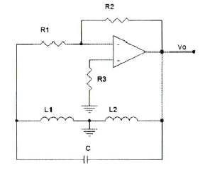
- 콜피츠발진회로
- LC발진회로
- 하틀리발진회로
- 클랩발진회로
(정답률: 59%)
9. 다음 중 정보 전송에서 반송파로 사용되는 정현파의 위상에 정보를 싣는 변조 방식은?
- PSK
- FSK
- PCM
- ASK
(정답률: 56%)
10. FM 변조에서 최대 주파수 편이가 80[kHz]일 때 주파수 변조파의 대역폭은 얼마인가?
- 40[kHz]
- 60[kHz]
- 80[kHz]
- 160[kHz]
(정답률: 67%)
11. RC 충ㆍ방전 회로에서 상승시간(Rise Time)이란 무엇인가?
- 출력전압이 최종값의 90[%]로부터 10[%]에 이르기까지 소요되는 시간
- 스위치를 넣은 후 출력전압이 최종값의 10[%]에서 90[%]까지 소요되는 시간
- 스위치를 넣은 후 출력전압이 최종값의 90[%]에서 100[%]까지 소요되는 시간
- 스위치를 넣은 후 출력전압이 최종값의 10[%]에 이르는데 소요되는 시간
(정답률: 66%)
12. 다음 그림과 같은 단안정 멀티바이브레이터 회로에서 콘덴서 C2의 역할은 무엇인가?
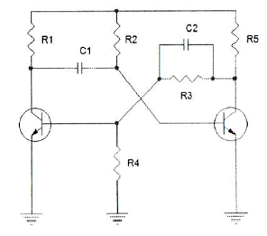
- 스위칭 속도를 빠르게 한다.
- 상태를 저장하는 메모리 기능을 한다.
- 트랜지스터의 베이스 전위를 일정하게 한다.
- 출력 파형의 진폭크기를 결정한다.
(정답률: 50%)
13. 2진법 곱셈 1010×0101의 계산값은?
- 0110010
- 1110001
- 0111001
- 0110001
(정답률: 49%)
14. 10진수 45를 2진수로 변환한 값으로 맞는 것은?
- 101100
- 101101
- 101110
- 101111
(정답률: 65%)
15. 다음 논리 함수
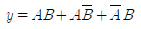
를 간소화한 것으로 옳은 것은?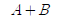
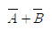
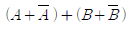
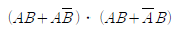
(정답률: 58%)
16. JK-Flip Flop에서 J입력과 K입력이 모두 1이고 CP=1일 때 출력은?
- 출력은 반전한다.
- Set 출력은 1, Reset 출력은 0이다.
- Set 출력은 0, Reset 출력은 1이다.
- 출력은 1이다.
(정답률: 51%)
17. 25진 리플 카운터를 설계할 경우 최소한 몇 개의 플립플롭이 필요한가?
- 4개
- 5개
- 6개
- 7개
(정답률: 60%)
18. 다음 중 리플 카운터(Ripple Counter)에 대한 설명으로 틀린 것은?
- 비동기 카운터이다.
- 카운트 속도가 동기식 카운터에 비해 느리다.
- 최대 동작 주파수에 제한을 받지 않는다.
- 회로 구성이 간단하다.
(정답률: 44%)
19. 여러 개의 회로가 단일 회선을 공동으로 이용하여 신호를 전송하는데 필요한 장치는?
- 멀티플렉서
- 디멀티플렉서
- 인코더
- 디코더
(정답률: 64%)
20. 반가산기(Half Adder)에서 A=1, B=1일 경우 S(Sum)의 값은?
- -1
- 1
- 0
- 2
(정답률: 59%)
2과목: 방송통신 기기
21. 다음 중 STL(Studio Transmitter Link)의 설명으로 가장 거리가 먼 것은?
- 고품질의 전송과 고신뢰성이 요구된다.
- 소전력의 운용과 기기의 소형화가 요구된다.
- 디지털 변조방식을 채택하여 다채널화가 가능하다.
- 단방향 전송에 한하여 운용이 가능하다.
(정답률: 84%)
22. 다음의 방송장비 중 서로 다른 영상신호 간의 동기신호를 정확하게 일치시키기 위하여 사용하는 장비는?
- FS
- VDA
- CG
- DVE
(정답률: 83%)
23. 임피던스가 25[Ω]인 반파장 안테나와 특성임피던스가 100[Ω]인 선로를 정합하기 위한 임피던스 값은?
- 150[Ω]
- 250[Ω]
- 25[Ω]
- 50[Ω]
(정답률: 80%)
24. 디지털 방송의 장점에 해당하지 않는 것은?
- 아날로그 신호와 비교해 볼 때 디지털 신호는 수신 강도가 강해야하므로 수신 안테나가 아날로그보다 더 크고 고성능이어야 한다.
- 디지털 압축 기술을 이용함에 따라 많은 채널을 만들 수 있다.
- 하나의 채널로 영상, 음성, 데이터 등 다양한 정보를 통합하고 유연하게 구성할 수 있는 통합 디지털 방송이 실현된다.
- 통신 데이터베이스와 연계하여 쌍방향 서비스가 가능하다.
(정답률: 90%)
25. 외부로부터 입력되는 여러 형상신호에 대해 동일한 동기신호를 기준으로 동작하게 하는 것을 무엇이라 하는가?
- GENLOCK
- DIMMER
- 방송용 서버
- 표준 시계
(정답률: 81%)
26. AM 방송에 관한 설명 중 옳은 것은?
- 중파 대역의 지표파로 FM보다 높은 주파수를 사용한다.
- 송신용 안테나로 파라볼라 안테나를 사용한다.
- 레벨변동의 영향을 받지 않는다.
- 포락선 검파회로가 사용된다.
(정답률: 73%)
27. 다음 중 마이크의 특성과 가장 거리가 먼 것은?
- 근접효과
- 감도
- 임피던스
- 충실도
(정답률: 63%)
28. 다음 중 TV방송의 송신소의 설치조건이 아닌 것은?
- 시청자로부터 가시거리에 위치하는 곳이다.
- 가급적 넓은 방송구역을 확보할 수 있는 곳이어야 한다.
- 많은 전기가 사용되므로 전력선과 가까운 곳으로 한다.
- 다른 방송서비스 구역과 중첩되지 않도록 송신공중선의 지향 특성을 설계한다.
(정답률: 77%)
29. 다음 중 TV화면의 픽셀(Pixel)과 관련된 파라미터(Parameter)는?
- 변조도
- 증폭도
- 해상도
- 분포도
(정답률: 90%)
30. 다음 중 괄호 안에 들어갈 말로 알맞은 것은?
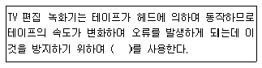
- ENG(Electronic News Gathering)
- UPS(Uninterruptible Power System)
- IRC(Incrementaly Related Carrier)
- TBC(Time Base Corrector)
(정답률: 88%)
31. 다음 중 위성방송을 위한 디지털 변조 방식으로 가장 널리 활용되는 것은?
- ASK
- FSK
- QPSK
- AM
(정답률: 83%)
32. 접지안테나를 통해 모인 초고주파 신호를 중간주파수(1[GHz])대의 신호로 변환하는 장치는?
- LNB
- Set-top Box
- 접시형 안테나
- BPF
(정답률: 83%)
33. CATV에서 입력신호 에너지를 간선에서 지선으로 불균등하게 분리시키는 장치는?
- 증폭기
- 분배기
- 분기기
- 보호기
(정답률: 87%)
34. CATV에서 헤드엔드로부터 송출된 신호를 서비스 구역 전역에 전송하기 위한 주된 전송로를 무엇이라고 하는가?
- 간선(Trunk Line)
- 분배선(Feeder Line)
- 인입선(Drop Line)
- 가입자선(Subscriber Line)
(정답률: 74%)
35. 인터넷방송시스템의 하드웨어(Hardware) 구성 요소가 아닌 것은?
- 방송영상 장비
- 네트워크 장비
- 무선중계기
- 서버
(정답률: 66%)
36. 우리나라의 지상파 DMB의 기반이 된 전송규격은?
- IBOC
- ISBD-TSB
- Eureka-147
- ITU-R BO
(정답률: 78%)
37. 디지털 방송매체를 통해 교통 및 여행정보를 전송할 목적으로 개발된 기술규격은?
- EPG
- Wibro
- MPEG
- TPEG
(정답률: 83%)
38. 송신기의 기준 신호 레벨 Es=1[Vrms]이고, 잡음레벨 En=0.01[Vrms]와 같을 때 AM NoiseRatio는 얼마인가?
- -10[dB]
- -20[dB]
- -30[dB]
- -40[dB]
(정답률: 76%)
39. TV 송신 시스템 시험용 장비의 신호별 기준 특성 임피던스가 틀린 것은?
- 고주파 신호 : 50[Ω]
- VIDEO 신호 : 75[Ω]
- AUDIO 신호 : 600[Ω]
- Transport Stream 신호 : 50[Ω]
(정답률: 76%)
40. 다음 중 DTV 시스템의 PSIP(Program andSystem Information Protocol)에 대한 설명으로 옳지 않은 것은?
- ATSC에서 규정한 것으로 표준번호가 A/65다.
- STT(System Time Table), MGT(Master guideTable), VCT(Virtual Channel Table), RRT(Rating Region Table), EIT(Event Information Table), ETT(Extended Text Table)로 구성되어 있다.
- RRT(Rating Region Table)는 Option 사항이다.
- 가상채널정보, 자막, 데이터방송과 같은 부가서비스 정보와 EPG 정보 등이 추가로 정의되어 있다.
(정답률: 67%)
3과목: 방송미디어 공학
41. 다음 중 일반적인 프로그램의 편성 개념과 거리가 먼 것은?
- 프로그램의 제작
- 프로그램의 시간
- 프로그램의 선택
- 프로그램의 배치
(정답률: 81%)
42. 다음 중 디지털 방송시스템의 특성이 아닌 것은?
- 네트워크 기반의 통합 제작 시스템
- 효율적 자료관리 시스템
- 방송자동화 시스템의 증가
- 선형 편집 시스템
(정답률: 83%)
43. 디지털 지상파 방송의 설명과 거리가 먼 것은?
- 잡음의 영향증가
- 화질과 음질의 향상
- 다채널화
- HDTV의 발전 촉진
(정답률: 86%)
44. 다음 중 오디오 신호의 양자화 과정에서 음의 왜곡을 줄이기 위해 잡음 신호를 혼합하는 기법은?
- 에일리어싱(Aliasing)
- 디더링(Dithering)
- 오버 샘플링(Over Sampling)
- 렌더링(Rendering)
(정답률: 68%)
45. 대기의 온도가 15[℃]인 경우 1[kHz] 순음의 파장은 약 얼마인가?
- 33[cm]
- 34[cm]
- 36[cm]
- 37[cm]
(정답률: 60%)
46. 다음 중 색에 관한 설명으로 틀린 것은?
- 색채에 대한 눈의 특성은 색의 면적 대소와 색의 거리에 따라 색 감각이 달라지며, 눈의 순응은 명암순응과 색순응이 있다.
- 색의 성질은 나타내는 3가지 요소로 색상, 포화도, 밝기이며 영상화잘 평가요소는 콘트라스트와 해상도가 추가된다.
- 색상과 밝기를 합쳐서 색도도라고 부르는데 이것은 말발굽 모양의 도형으로서 색채를 다루는 컬러텔레비전에서 중요한 역할을 한다.
- 색 온도란 완전한 암흑 속에서 물체가 서서히 백열화하여 가는 색의 빛을 기준하여 그 온도를 절대온도로 측정한 것으로 빛의 질을 나타낸다.
(정답률: 72%)
47. 방송 스튜디오 시설 공사시 컴포지트(Composite) 영상신호용 케이블의 임피던스는?
- 50[Ω]
- 60[Ω]
- 70[Ω]
- 75[Ω]
(정답률: 84%)
48. 다음 중 화면에서 여름의 대낮이나 햇볕의 강함을 강조하며 명암의 대비를 확실히 하기 위해 밝은 곳은 더 밝게, 어두운 곳은 더 어둡게 느끼게 하는 조명기법으로 가장 적절한 것은?
- 하이 키(High Key)
- 로우 키(Low Key)
- 플랫 키(Flat Key)
- 하드 키(Hard Key)
(정답률: 78%)
49. 다음 중 뉴미디어 부가서비스와 가장 거리가 먼 것은?
- VOD(Video On Demand)
- 문자 다중방송
- FM 다중방송
- FDDI
(정답률: 68%)
50. 디지털 오디오 파일의 크기를 결정하는 요소가 아닌 것은?
- 양자화 비트수
- 시간
- 샘플링 레이트
- 음색
(정답률: 85%)
51. 다음의 디지털 TV 서비스 중 일정시간 간격으로 제공되는 콘텐츠를 편당 요금지불 방식으로 시청하는 서비스는 무엇인가?
- Near-VOD
- Real-VOD
- TVOD
- EPG
(정답률: 76%)
52. 1분 동안 16비트, 44.1[khz] 샘플링 레이트로 스테레오 사운드를 저장한다면 약 얼마의 공간이 필요한가?
- 2,646,000[byte]
- 5,292,000[byte]
- 10,584,000[byte]
- 21,168,000[byte]
(정답률: 73%)
53. 다음 중 4:2:2 크로마 서브샘플링과 관련된 설명으로 맞는 것은?
- 루미넌스값은 4:4:4의 1/2이다.
- 크로마는 4:4:4대비 1/2 수평해상도 및 동일한 수직해상도를 갖는다.
- 크로마는 4:4:4대비 1/2 수직해상도 및 동일한 수평해상도를 갖는다.
- 크로마는 4:4:4대비 1/2 수평해상도 및 수직해상도를 갖는다.
(정답률: 69%)
54. 지상파 DMB의 경우 다수개의 비디오, 오디오 및 TPEG 등이 포함된 데이터 서비스 채널들이 다중화되어 있다. 이런 다중화 구성에 대한 정보는 다음 중 어디에 포함되어 있는가?
- MSC
- FIC
- 비디오 스트림
- 오디오 스트림
(정답률: 63%)
55. 데이터방송의 특성이 아닌 것은?
- 제한적 지역 서비스
- 단방향/양방향 모두 가능
- 이용자 요구의 콘텐츠 제공
- 최신 자료의 누적
(정답률: 80%)
56. 다음 중 HDTV 중계방송 차량에 설치되는 보편적인 시스템으로 틀린 것은?
- 8-VSB 송신기
- ATSC/NTSC Encoder
- Master Control Switcher
- Up/Down Converter
(정답률: 75%)
57. 텔레비전을 인터넷망에 연결하여 영상 및 다양한 양방향 멀티미디어를 제공하는 방송통신 융합서비스를 무엇이라 하는가?
- HSDPA
- DMB
- IPTV
- DVB-H
(정답률: 85%)
58. 표본화된 펄스의 진폭을 디지털 2진 부호로 변환시키기 위하여 진폭의 레벨에 대응하는 정수 값으로 등분하는 과정을 무엇이라 하는가?
- 부호화
- 복조화
- 양자화
- 평활화
(정답률: 79%)
59. 우리나라에서 시판되는 DVD(Digital Video Disk)에서 적용되는 일반적인 음성 및 영상 압축 방식으로 가장 적절하게 짝지어진 것은?
- AC-3, MPEG-2
- MP3, AVI
- QCELP, MPEG-4
- EVRC, JPEG
(정답률: 82%)
60. 멀티미디어 및 하이퍼 미디어의 정의, 부호화 원칙, 시스템 요구사항, 오브젝트 클래스를 이용한 부호화 표현 등을 목적으로 하는 국제 표준화 그룹은?
- MPEG-1
- MPEG-2
- MPEG-4
- MHEG
(정답률: 78%)
4과목: 방송통신 시스템
61. 다음 중 통신망 구성에서 역다중화기는 어떤 장치계에 속하는가?
- 단말장치
- 교환장치
- 전송장치
- 호처리장치
(정답률: 71%)
62. 어떤 신호가 0~25[kHz]로 주파수 대역이 제한되어 있을 때 나이퀴스트율을 만족하는 최소 표본화 주기는 얼마인가?
- 20[μs]
- 30[μs]
- 40[μs]
- 45[μs]
(정답률: 77%)
63. 다음 중 디지털 변조신호에 따라 반송파의진폭과 위상을 동시에 변화시키는 방식은?
- QAM
- FSK
- PSK
- ASK
(정답률: 81%)
64. 다음 중 FM송신기의 최고변조주파수가 15[kHz]인 경우 100[%] 변조시 점유주파수의 대역폭은?
- 10[kHz]
- 90[kHz]
- 180[kHz]
- 270[kHz]
(정답률: 64%)
65. 다음 중 AM 표준방송에 대한 설명으로 틀린 것은?
- 526.5[kHz]~1,606.5[kHz]까지의 중파대 주파수를 사용한다.
- 양측파대 진폭변조를 사용한다.
- FM에 비해 외래잡음이 작고 다이나믹 레이지가넓다.
- 수신기는 슈퍼헤테로다인 방식을 사용한다.
(정답률: 80%)
66. FM 수신기 보조회로가 아닌 것은?
- 진폭제한기
- 디엠퍼시스 회로
- 스켈치 회로
- IDC 회로
(정답률: 71%)
67. 주요 지상파 HDTV 방송의 전송방식이 바르게 짝지어진 것은?
- 한국 : ATSC, 유럽 : DVB-T, 일본 : ISDB-T
- 한국 : DVB-T, 유럽 : ISDB-T, 일본 : ATSC
- 한국 : ISDB-T, 유럽 : ATSC, 일본 : DVB-T
- 한국 : ATSC, 유럽 : ATSC, 일본 : DVB-T
(정답률: 89%)
68. 다음 중 지상파 텔레비전의 전파를 방사하는 설비를 송신설비라 하는데 이에 포함되지 않는 것은?
- 영상, 음성 송신기
- FSS 송신장치
- 잔류측파대 필터
- 다이플렉서
(정답률: 57%)
69. 다음 중 ATSC 디지털TV의 영상신호 압축방식은?
- MPEG-1
- MPEG-2
- MPEG-3
- MPEG-7
(정답률: 76%)
70. 케이블TV 시스템에서 0[dBmV]인 입력신호가 23[dB]의 증폭기와 500[m]의 케이블을 거치면 출력은 얼마인가? (단, Cable Loss 특성이 4[dB]/100[m]이다.)
- 0[dBmV]
- 1[dBmV]
- 2[dBmV]
- 3[dBmV]
(정답률: 65%)
71. CATV망에서 동축케이블은 온도 변화에 따라 감쇠량이 변동한다. 다음 중 이러한 변동을 자동으로 보상해 주는 것은?
- ATT
- EQ
- BON
- AGC
(정답률: 78%)
72. CATV시스템 구성의 헤드엔드 설비가 아닌 것은?
- 지상파 재송신 시설
- 공중회선 네트워크
- CMTS
- 모니터 및 제어시설
(정답률: 74%)
73. 다음 중 통신위성의 개발, 발사, 운용 및 관리 등을 수행하는 국제적인 위성통신기구는?
- INSAT
- INTELSAT
- WESTER
- ISO
(정답률: 79%)
74. 다음은 위성통신체 서브시스템을 나타낸 것이다. 서브 시스템별 구성부에 대한 주요기능이 틀린 것은?
- 안테나계 : 신호의 송수신
- 중계기계 : 신호를 수신한 후 주파수를 변화시켜 재송신
- 추진계 : 궤도위치 유지, 자세수정, 궤도 변경 및 초기궤도에서의 전계
- 구체계 : 위성의 궤도상 위치 및 자세제어
(정답률: 72%)
75. 다음 보기에서 설명하는 필터는?
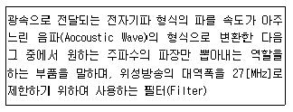
- SAW Filter
- Low Pass Filter
- High Pass Filter
- Band Pass Filter
(정답률: 70%)
76. 다음 중 디지털 위성방송 송신시스템의 구성요소가 아닌 것은?
- MPEG-2 인코더
- 다중화기
- 등화기
- 저잡음증폭기
(정답률: 67%)
77. 지상파 DMB에서 사용하는 QPSK 변조방식은 하나의 부호에 몇 개의 비트를 적용하는가?
- 2
- 4
- 16
- 64
(정답률: 75%)
78. 화상통신회의의 특징이라고 할 수 없는 것은?
- 시간과 경비의 절약, 신속하고 정확한 정보전달이 가능하다.
- 적임자의 회의참석이 용이하다.
- 기업 활용의 극대화 및 효율화를 기대할 수 없다.
- TV회의를 실현하려면 고속, 광대역 네트워크가 필요하다.
(정답률: 82%)
79. 다음 중 송신소 시스템 설계식 고려해야 할 기본조건으로 거리가 먼 것은?
- 전파의 특성상 TV, FM, 중파방송의 설계조건은 동일하게 적용한다.
- 자연재해의 영향이 적은 곳에 설치한다.
- 운용요원의 통근 및 거주가 용이한 곳에 설치한다.
- 전원선의 인입과 기기의 반입이 용이한 장소에 설치한다.
(정답률: 72%)
80. 구내전송선로설비의 설계시 고려할 사항으로 TV수신증폭기 장치함의 설치 위치로 적당하지 않는 것은?
- 종합유선방송설비와 구내전송선로설비가 접속되는 종단점
- 공동안테나시설의 최초 수신개소
- 동축케이블의 분배ㆍ분기 또는 접속을 위하여 필요한 곳
- 함은 계단 또는 복도 등 공용부분에 설치 및 방송설비기준
(정답률: 63%)
5과목: 전자계산기 일반 및 방송설비기준
81. 다음 중 1비트(Bit)를 저장할 수 있는 기억장치는?
- Register
- Accumulator
- Filp-Flop
- Delay
(정답률: 67%)
82. 아래 스위칭 회로의 논리식으로 옳은 것은?
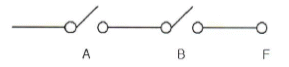
- F = A + B
- F = A ㆍ B
- F = A - B
- F = A / ( B + A )
(정답률: 70%)
83. 2진수 0.111의 2의 보수는 얼마인가?
- 0.001
- 0.010
- 0.011
- 1.001
(정답률: 54%)
84. 프로그램에서 함수들을 호출하였을 때 복귀주소(Return Address)를 보관하는데 사용하는 자료구조는 어느 것인가?
- 스택(Stack)
- 큐(Queue)
- 트리(Tree)
- 그래프(Graph)
(정답률: 73%)
85. 다음 지문에서 설명하고 있는 운영체제의 종류는?
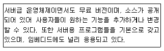
- 유닉스(Unix)
- 리눅스(Linux)
- 윈도우즈(Windows)
- 맥(Mac) O/S
(정답률: 81%)
86. 대기 중인 프로세서가 요청한 자원들이 다른 대기 중인 프로세스에 의해서 점유되어 다시 프로세스 상태를 변경시킬 수 없는 경우가 발생하게 되는데 이러한 상황을 무엇이라 하는가?
- 한계 버퍼 문제
- 교착상태
- 페이지 부재상태
- 스레싱(Thrashing)
(정답률: 60%)
87. 다음 중 컴파일러(Compiler) 언어에 대한 설명으로 틀린 것은?
- 문제중심의 고급언어
- 프로그램 작성과 수정이 용이
- 기계중심의 언어
- 컴퓨터 기종에 관계없이 공통사용
(정답률: 59%)
88. 다음 중 프로그램의 종류에 대한 설명으로 틀린 것은?
- 베타버전이란 개발자가 상용화하기 전에 테스트용으로 배포하는 것을 말한다.
- 쉐어웨어란 기간이나 기능 제한 없이 무료로 사용하는 것을 말한다.
- 데모버전이란 기간이나 기능의 제한을 두고 무료로 사용하는 것을 말한다.
- 테스트버전이란 데모버전 이전에 오류를 찾기 위해 배포하는 것을 말한다.
(정답률: 80%)
89. 다음 중 중앙처리장치에서 사용하고 있는 버스(BUS)의 형태에 속하지 않는 것은?
- Address Bus
- Control Bus
- Data Bus
- System Bus
(정답률: 69%)
90. 다음 지문은 인터럽트 처리과정을 나타낸 것이다 처리과정의 순서를 올바르게 나열한 것은?
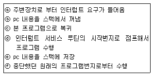
- ⓐ → ⓓ → ⓑ → ⓒ → ⓕ → ⓔ
- ⓐ → ⓔ → ⓓ → ⓑ → ⓒ → ⓕ
- ⓔ → ⓐ → ⓓ → ⓑ → ⓒ → ⓕ
- ⓔ → ⓐ → ⓑ → ⓓ → ⓒ → ⓕ
(정답률: 72%)
91. 전파법에서 정의하는 “방송을 양호하게 수신할수 있는 구역으로서 전계강도가 미래창조과학부장관이 정하여 고시하는 기준 이상인 구역”을 무엇이라 하는가?
- 양청구역
- 양호구역
- 실제구역
- 방송구역
(정답률: 78%)
92. 다음 중 전파법에서 정의하는 “지상파 방송업무”란?
- 일정한 고정 지점간의 무선통신업무로서 지상의 송신설비를 이용하여 송신하는 무선통신업무
- 공중이 직접 수신하도록 할 목적으로 지상의 송신설비를 이용하여 송신하는 무선통신업무
- 공중이 간접 수신하도록 할 목적으로 지상의 송신설비를 이용하여 송신하는 무선통신업무
- 공중이 직접 수신하도록 할 목적으로 지상의 수신설비를 이용하여 송신하는 무선통신업무
(정답률: 80%)
93. 다음 중 중계유선방송사업을 할 수 있는 자는?
- 외국인 또는 외국의 정부나 단체
- 미성년자 또는 한정치산자
- 재정 및 기술적 능력이 있는 자
- 파산선고를 받은 자로서 복권되지 아니한 자
(정답률: 78%)
94. 유선방송국 설비 중 입력신호 에너지를 2이상으로 균등 분배하는 장치는?
- 증폭기
- 보호기
- 분기기
- 분배기
(정답률: 82%)
95. 종합유선방송국의 방송 채널 별 주파수 대역은?
- 4.2[MHz]
- 4.75[MHz]
- 6[MHz]
- 6.25[MHz]
(정답률: 74%)
96. 종합유선방송국의 진폭변조기의 출력 특성임피던스는 몇 [Ω]인가?
- 30[Ω]
- 50[Ω]
- 75[Ω]
- 600[Ω]
(정답률: 75%)
97. 종합유선 방송국이 사용하는 주 전송장치의 전송방식을 지정하거나 변경하도록 할 수 있는 경우가 아닌 것은?
- 기술의 발전에 따라 전송방식을 변경할 필요가 있는 경우
- 방송구역의 규모 또는 형태에 따라 특정한 전송방식의 사용이 필요한 경우
- 전송선로설비와 주 전송장치의 호환성을 확보하기 위하여 필요한 경우
- 주 전송장치의 전송방식을 부호화 변조방식으로 변경할 경우
(정답률: 69%)
98. 다음 중 장치함의 설치 위치가 아닌 곳은?
- 인입용 종합유선 방송 전송선로 설비와 옥내전송선로 설비가 최초로 접속되는 점
- 텔레비전 공동시청 안테나 시설의 최초 수신개소
- 맨홀 및 핸드홀의 인입관로 상단 지점
- 케이블의 분배ㆍ분기 또는 접속을 위하여 필요한 곳
(정답률: 66%)
99. 종합유선방송 구내전송선로설비에서 동축케이블의 임피던스는 얼마인가?
- 50[Ω]
- 75[Ω]
- 300[Ω]
- 600[Ω]
(정답률: 82%)
100. 종합유선방송 사업자 별 시설에서 방송사업자(SO)의 설비가 아닌 것은?
- 중계재방송 설비
- 제작, 편집 설비
- 프로그램수신 설비
- 분배센터 설비
(정답률: 41%)